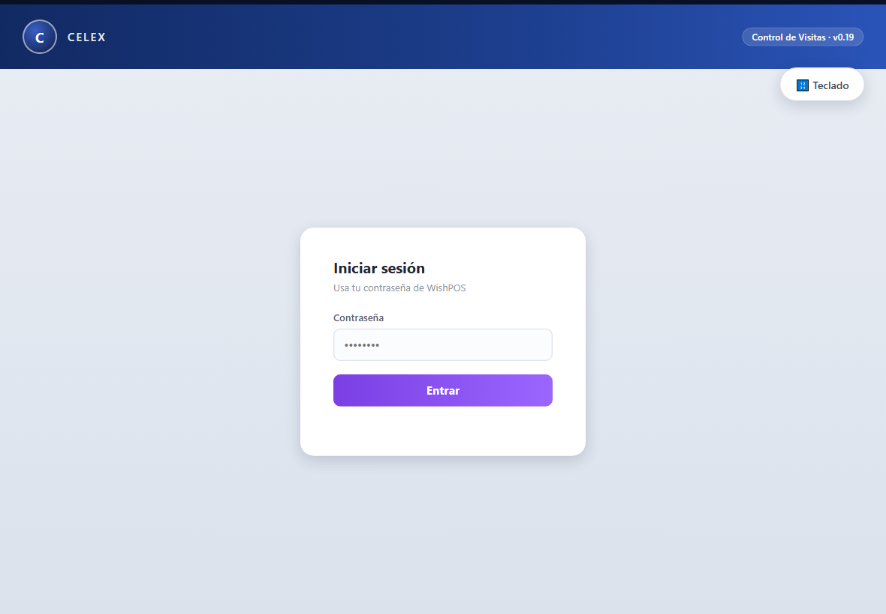
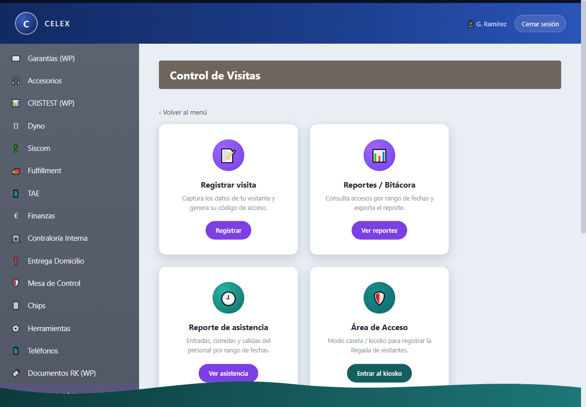
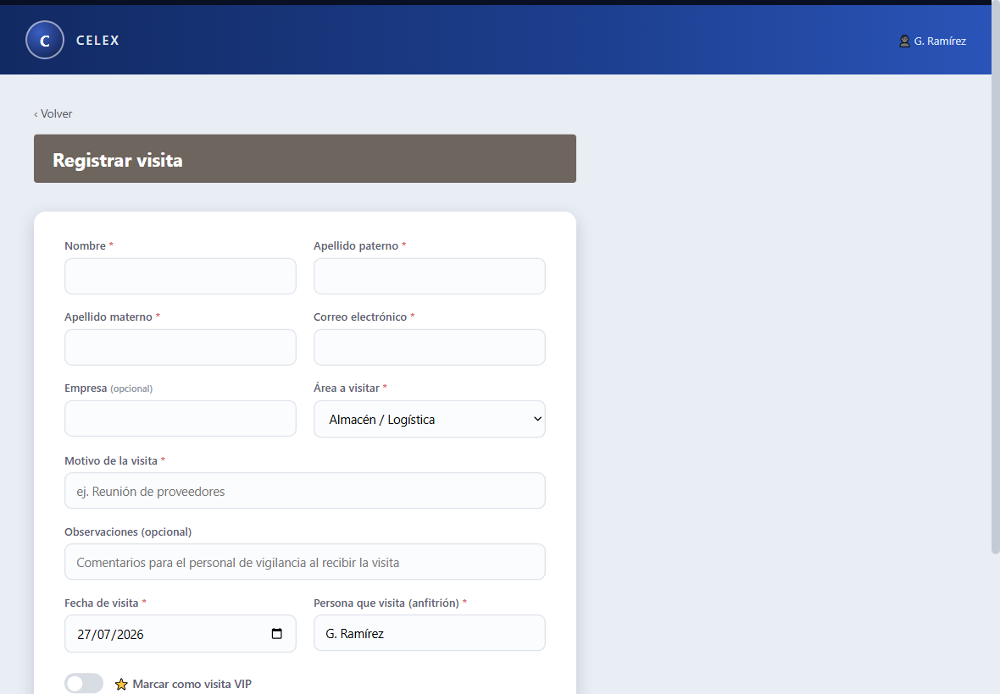
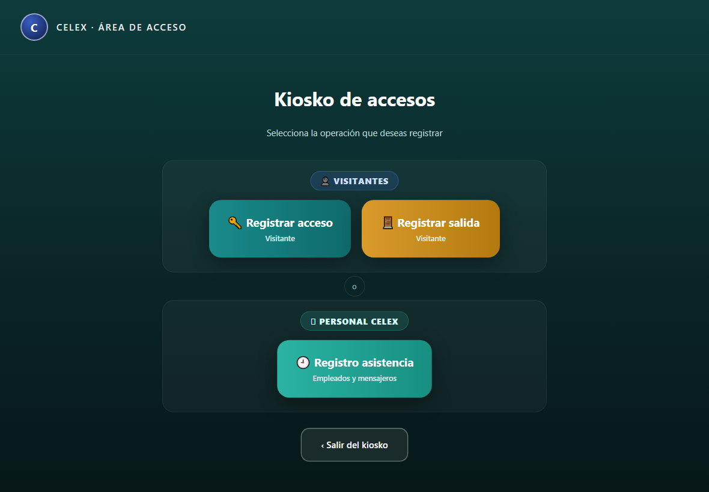
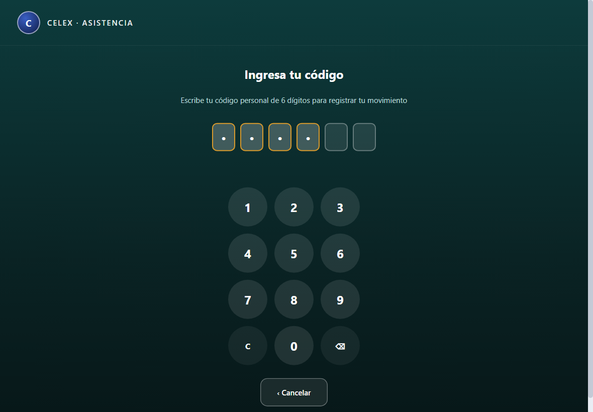
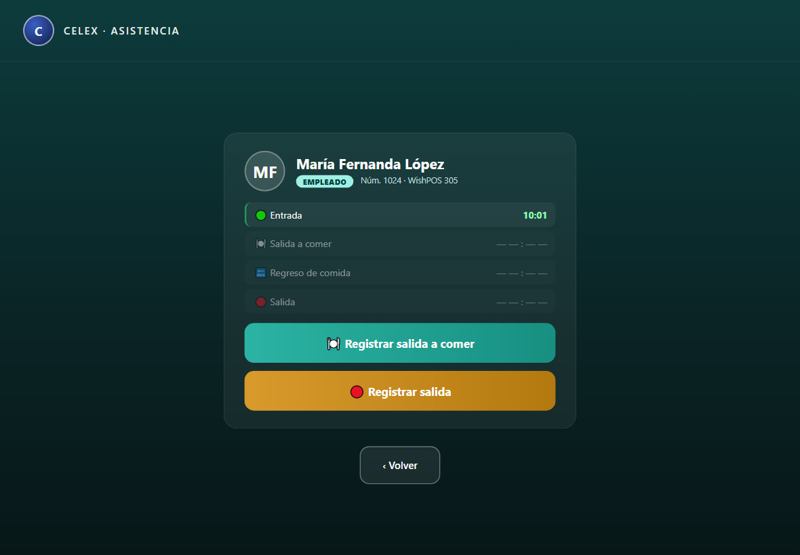
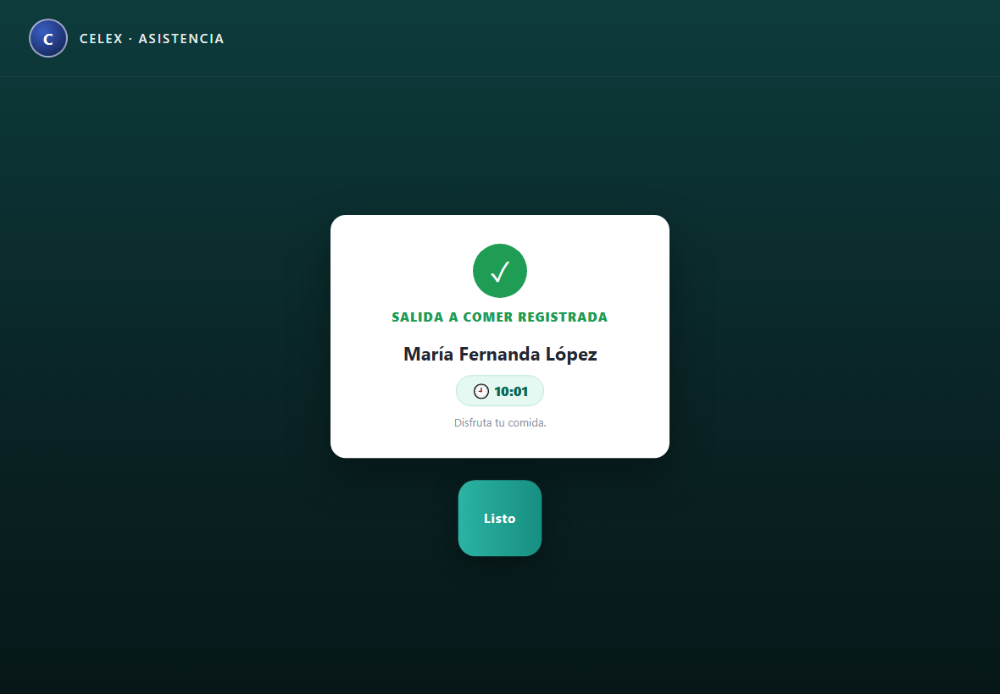
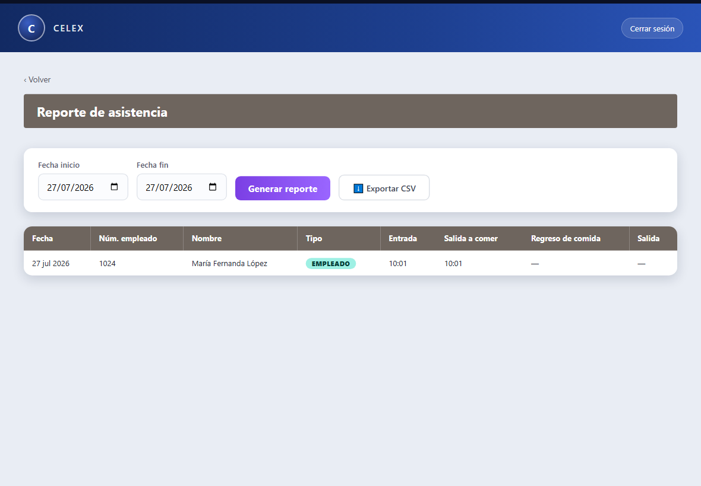
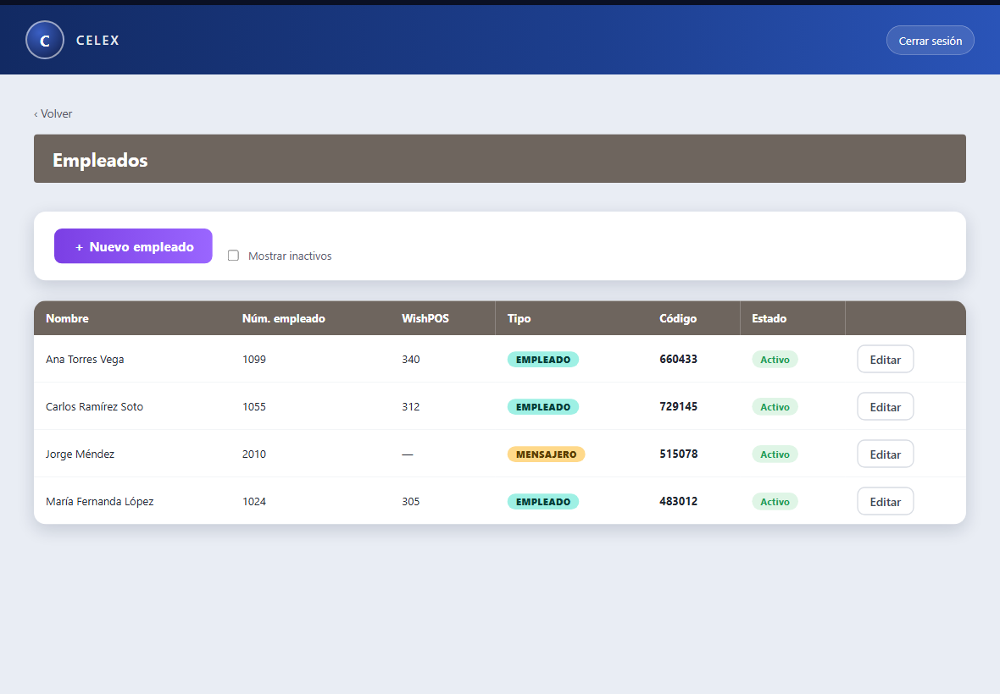
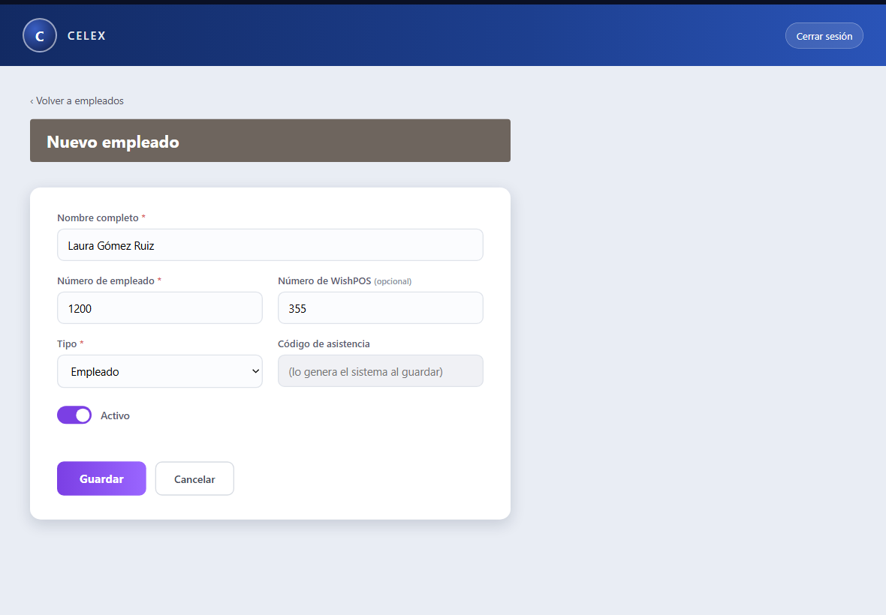

Registro y control de acceso de visitantes y de la asistencia del personal: código de acceso, foto en caseta, código de salida y reportes.
📌 Versión del sistema · v0.19 · Actualizado: 27 de julio de 2026
1 Conceptos clave (léelo primero)
Código de acceso (visitante) 482913 — se genera al registrar la visita y se le comparte al visitante (también le llega por correo). Lo teclea en la caseta para registrar su llegada. Sirve una sola vez y solo el día para el que se registró.
Código de salida (visitante) 207765 — es distinto al de acceso. Se genera cuando la visita entra y aparece en su etiqueta. El visitante lo conserva y lo usa al salir.
Código de asistencia (personal) 483012 — código personal y permanente de cada empleado o mensajero. Lo genera el sistema al darlo de alta (no se captura). Con él, el personal registra su asistencia en el kiosko.
Estados de una visita:
Pendiente registrada, aún no llega ·
Dentro ya entró, sigue adentro ·
Salida registrada entró y salió ·
Cancelada anulada antes de entrar
2 Iniciar sesión
Abre el sistema en el navegador.
Escribe tu contraseña de WishPOS (no se pide usuario) y presiona Entrar.
Entras al Menú; da clic en Control de Visitas para abrir el módulo.

Inicio de sesión — solo pide la contraseña de WishPOS.
SugerenciaEs la misma contraseña de WishPOS. El sistema no crea usuarios nuevos.
3 El módulo Control de Visitas
Verás las siguientes tarjetas (las de Empleados y Configuración solo aparecen si tu usuario tiene el permiso correspondiente):

Módulo Control de Visitas: registrar, reportes, asistencia, kiosko, empleados y configuración.
Tarjeta
Para qué sirve
📝 Registrar visita
Capturar un visitante y generar su código de acceso.
📋 Mis visitas
Consultar, editar o cancelar las visitas que tú registraste.
📊 Reportes / Bitácora
Accesos de visitantes por fechas, con export a CSV.
🕘 Reporte de asistencia
Entradas, comidas y salidas del personal por fechas.
🛡️ Área de Acceso
Modo caseta/kiosko: visitantes y asistencia de personal.
👥 Empleados
Alta y administración del padrón (solo usuarios autorizados).
⚙️ Configuración
Parámetros del sistema (solo usuarios autorizados).
4 Registrar una visita
En el módulo, entra a Registrar visita.
Llena los campos (los marcados con * son obligatorios): Nombre y apellidos *, Correo * (ahí llega el código), Empresa (opcional), Área *, Motivo *, Observaciones (para vigilancia), Fecha de visita *, Anfitrión *, ⭐ VIP (si estás autorizado) y vehículo (Marca/Modelo/Placas si aplica).
Presiona Generar código de acceso. El visitante lo recibe por correo; también puedes copiarlo.

Captura de la visita. Empresa es opcional; la fecha define el día válido para el acceso.
RecuerdaEl visitante necesita este código el día de su visita para registrar su llegada en la caseta.
5 Mis visitas (consultar / editar / cancelar)
Muestra la lista de lo que tú registraste, con su estado, foto (si ya entró) y etiqueta ⭐ VIP cuando aplica.
Editar — solo mientras la visita está Pendiente. Una vez que entró, queda deshabilitado.
Cancelar esta visita — dentro de la edición (pide confirmación); solo mientras esté Pendiente. Su código de acceso deja de funcionar.
Volver sin guardar — sale sin aplicar cambios.
6 Modo caseta / Área de Acceso
Entra con Área de Acceso → Entrar al kiosko. La pantalla separa en dos grupos para no confundir al visitante con el personal:

Visitantes (acceso / salida) y Personal Celex (registro de asistencia).
6.1 Registrar acceso de un visitante (llegada)
Toca 🔑 Registrar acceso.
El visitante teclea su código de acceso de 6 dígitos.
Confirma identidad: escribe el apellido paterno tal como se registró y presiona Validar.
Foto: Tomar foto → Usar esta foto (o Repetir foto). Sin cámara, Continuar sin foto.
Aparece la etiqueta de acceso con nombre, área, anfitrión, la marca ⭐ VISITA VIP si aplica y el código de salida (a conservar). Se puede Imprimir etiqueta.
Mensajes posibles al validar:
Código no reconocido — mal tecleado o no existe.
Este código ya fue utilizado — ya se registró el acceso con él.
Esta visita fue cancelada — solicitar apoyo en recepción.
Esta visita está registrada para el [fecha], no para hoy — el acceso solo es válido el día registrado.
Apellido no coincide — hasta 3 intentos; tras el tercero se pide apoyo a seguridad/recepción.
6.2 Registrar salida de un visitante
Toca 🚪 Registrar salida.
El visitante teclea su código de salida.
En "¿Eres tú?" confirma con ✅ Confirmar salida (muestra el tiempo de estancia) o ❌ No soy yo.
6.3 Registro de asistencia del personal
Para empleados y mensajeros. Toca 🕘 Registro asistencia y teclea el código de asistencia de 6 dígitos.

Pad de asistencia: código personal de 6 dígitos.
El sistema identifica a la persona contra el padrón:
Si es su primera marca del día, registra la Entrada y pide una foto. Para los MENSAJERO ahí termina (solo registran entrada).
Si ya tiene entrada y es EMPLEADO, aparece su panel del día con la línea de tiempo y los botones válidos.

Panel del empleado: entrada marcada; el sistema ofrece el siguiente paso y la salida.
El empleado registra en orden: Salida a comer → Regreso de comida → Salida. Se permite la salida anticipada (omitir la comida). Cada marca muestra una confirmación:

Confirmación del movimiento registrado, con la hora.
NotaEl código de asistencia es personal y permanente; no se comparte. Si un empleado lo olvida, se consulta en Empleados (§9).
6.4 Salir del kiosko
El botón ‹ Salir del kioskocierra la sesión por completo (para no dejar la cuenta abierta en el equipo de la caseta).
7 Reportes / Bitácora de visitantes
Entra a Reportes / Bitácora.
Elige el rango de fechas (Desde / Hasta) y presiona Generar reporte.
La tabla muestra: visitante, empresa, área, anfitrión, fecha, estado, registro, acceso, código de salida, salida y duración.
Exportar CSV descarga lo que ves en pantalla (abre en Excel).
8 Reporte de asistencia
Entra a Reporte de asistencia, elige el rango de fechas y Generar reporte.
La tabla muestra, por empleado y día: Entrada, Salida a comer, Regreso de comida y Salida, con el tipo (Empleado / Mensajero).
Exportar CSV descarga el reporte.

Reporte de asistencia: una fila por empleado y día con sus cuatro marcas.
9 Empleados (padrón) — solo usuarios autorizados
La tarjeta 👥 Empleados administra al personal que registra asistencia.

Padrón de empleados: código, tipo y estado (activo / inactivo).
＋ Nuevo empleado — captura Nombre, Número de empleado, Número de WishPOS (opcional) y Tipo (Empleado o Mensajero). El código de asistencia lo genera el sistema (6 dígitos) y se muestra al guardar para que se lo comuniques al colaborador.
Editar — actualiza los datos; el código no cambia.
Activar / inactivar — un empleado inactivo ya no puede registrar asistencia. Usa "Mostrar inactivos" para verlos.

Alta de empleado. El código de asistencia es de solo lectura: lo genera el sistema al guardar.
Carga desde otro sistema (área de sistemas)Se puede cargar el personal directo en la base de datos con sp_CV_Empleados_Alta (uno, devuelve su código) o sp_CV_Empleados_GenerarCodigosFaltantes (masivo: se insertan los renglones sin código y el procedimiento asigna a cada uno un código único).
10 Configuración (solo usuarios autorizados)
Ruta de fotos — carpeta del servidor donde se guardan las fotos.
Prefijo y Dígitos del ID — arman el nombre de cada foto (ej. CV0000000001).
Usuarios VIP / kiosko / reclutadores — listas de IDs de usuario separados por coma.
ImportanteUn cambio en estas listas surte efecto la próxima vez que esa persona inicie sesión.
11 Preguntas frecuentes
¿El visitante puede entrar otro día con el mismo código? No. Solo el día registrado y una sola vez.
¿Quién define el código de asistencia? Lo genera el sistema al dar de alta; se muestra en el alta y se consulta en Empleados.
Un mensajero, ¿marca comida y salida? No. Los mensajeros solo registran entrada.
Un empleado se fue sin marcar la comida, ¿puede marcar salida? Sí, se permite la salida anticipada: basta con haber marcado la entrada.
La cámara no funciona en la caseta. Requiere abrir el sistema por HTTPS. Sin cámara, usa Continuar sin foto.
El visitante no recibió el correo. Verifica el correo capturado y reporta a soporte (el envío depende de un proceso del servidor).